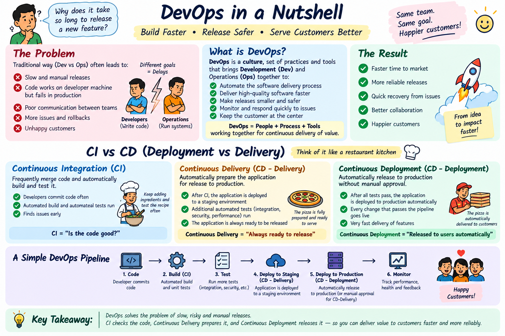

Why traditional manual deployments caused midnight failures, how DevOps broke down the "Wall of Confusion", and the crucial difference between Continuous Delivery and Continuous Deployment.
~ No more "Works on my machine!" 🍕In traditional software teams (Waterfall / legacy setups), Developers and Operations (Ops) worked in completely separate isolated departments with opposing goals:
Toggle between Traditional Silos vs The DevOps Way to see how software reaches production.
Writes 6 months of code, zips the `.war`/`.jar` file, and throws it over the wall!
Tries to manually install app at 2 AM. Server crashes due to missing DB configuration!
DevOps (Development + Operations) is NOT a tool or a single job title—it is a culture and methodology that bridges the gap between software developers and system administrators.
Imagine a restaurant where Chefs (Dev) make new pizza recipes in isolation, while Delivery Drivers (Ops) get blamed when pizzas arrive cold or with missing toppings.
The DevOps Solution: Instead of manual handoffs, they install an automated conveyor oven with ingredient sensors (CI/CD). The Chef places the pizza dough on the conveyor, sensors test dough quality automatically, and the oven delivers hot, boxed pizzas directly to delivery riders instantly!
Comprehensive architecture breakdown of the DevOps feedback loop, continuous delivery culture, and toolchain.

Freshers often confuse CI, Continuous Delivery, and Continuous Deployment. Here is the exact breakdown:
Developers frequently commit code to Git. Every single push automatically triggers an Automated Build & Test Suite (e.g. Maven compile + JUnit tests + Docker build). If any test fails, the build breaks immediately!
Building on top of CI, code is automatically built, tested, and deployed to a Staging / Pre-Production environment. However, pushing code to Live Production requires a manual button click / human approval by a manager.
Fully automated end-to-end! If code passes all automated tests in the pipeline, it goes straight into Live Production servers automatically with ZERO human intervention (used by Netflix, Amazon, Spotify).
Select a mode below and click "Push Code Change" to watch the pipeline execute stage by stage!